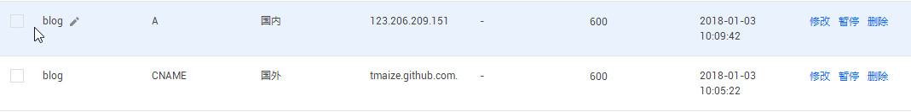
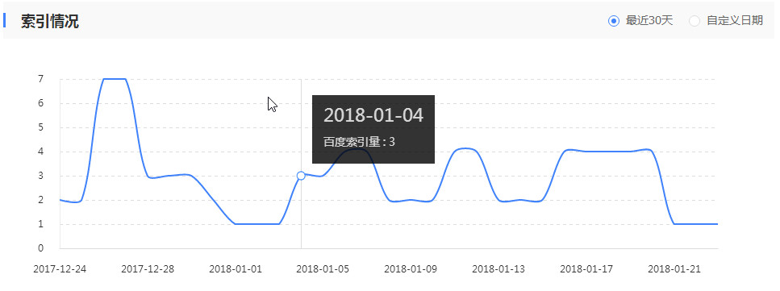
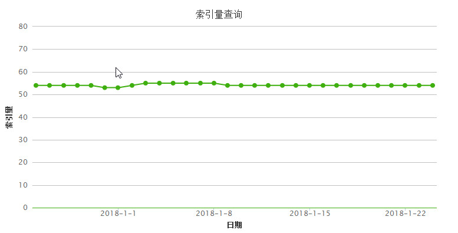
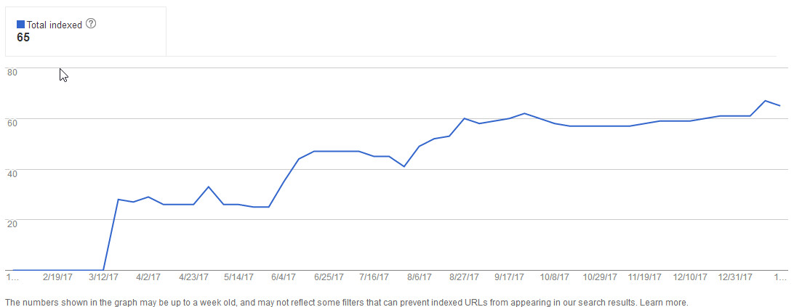

最近发现在百度上已经找不到我的博客了，70多条索引一个都没有了，而Google和360还是有比较高的索引的
试了下抓取一直是403
百度了下，发现GitPage屏蔽了百度的爬虫，这是和百度有仇吗？
试了几种方法
CDN
正好腾讯云每月有50G的免费流量就试了下
-
使用CDN需要新的域名，显然这是不合适的，尽管静态站点很适合CDN
-
爬虫对CDN并不友好
-
爬虫会缓存ip的，并不是根据域名的，CDN会根据地区有不同的镜像中心来响应
-
而且第一次从CDN请求没有命中时（如果流量大就可以忽略了），还是从源站去请求的，同样是被Github屏蔽的
-
为了学习下新知识，还是去搞了下CDN，记录下使用步骤
-
创建新域名cdn.blog.tmaize.net
-
把新域名解析到CDN指定的CNAME
-
设置源站为blog.tmaize.net,设置一些刷新策略
-
设置回源host为blog.tmaize.net，这个很重要因为GitPage也是根据CNAME来的，所以http请求包包头的host字段内容要设置为blog.tmaize.net
-
等待10分钟左右，使用cdn.blog.tmaize.net访问博客，真的是快的飞起来了
可惜并不适合seo
使用国内的静态托管服务
Coding 免费用户 先访问到一个广告页面再重定向到自定义域名，显然是不行的
码云，不支持自定义域名……
国内代理+动态解析
GitPage对Google是很友好的，可以保持不变
国内访问不经过GitPage的服务器，而是经过自己的代理服务器不就成了吗
然后国外解析到GitPage的服务器，国内解析到自己的代理服务器
Nginx设置下代理
#百度抓取失败，代理一下
server {
listen 80;
server_name blog.tmaize.net;
location /{
proxy_set_header Host blog.tmaize.net;
proxy_pass http://tmaize.github.com;
}
}
域名设置下解析,国外的不变，国内的解析到自己的服务器

在国内ping了下，访问的是自己服务器的ip，挂上VPN又ping了下访问带而是GitPage的CDN，没毛病
再回到百度的控制台，测试了下抓取，200 OK
最后
经过了一个星期的测试，百度有了一个收录，不过看了下后台数据发现并不稳定，而且360的收录也变少了



最后想了下，用Gitpage不就是自己的服务器到期不想续费吗，懒得搞动态博客程序了？而开着代理还是要用自己的服务器的，那还不如用wordpress
默默删了代理，解析。。。去你妹的百度，不收录算了。。。